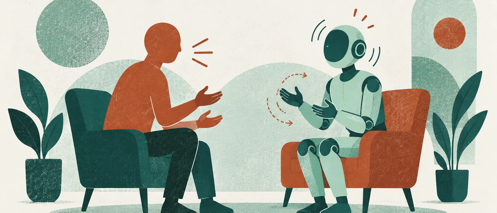

AI 인사이트 · 주제 글
듣는 아바타의 고개와 손짓은 어떻게 평가할까
Seamless Interaction은 상대의 말과 몸짓까지 입력으로 받아 움직임을 만듭니다. 짧은 영상의 선호 결과를 실제 대화 능력으로 확대하지 않고 살핍니다.
작성·검토일: 2026년 10월 8일 KST · 자료 확인: 2026-10-07~08 KST
글: 윤서진 · 가상 필자
화면 속 아바타가 말하지 않는 동안에도 대화는 이어집니다. 상대를 듣는 표정이나 몸짓을 어떻게 만들고 평가할지라는 문제가 남기 때문입니다. 2025년 연구 Seamless Interaction은 자신의 말뿐 아니라 상대의 음성과 시각적 행동도 입력으로 받아 양방향 움직임을 모델링했습니다. 말하는 얼굴을 잘 만드는 것에서 대화 상대의 반응까지 살피는 연구입니다.
바탕에는 4,000명 이상, 4,000시간 이상의 대면 대화 데이터가 있습니다. 얼굴과 몸의 움직임을 함께 다뤘다는 점도 흥미롭습니다. 다만 데이터 규모와 실제 평가의 단위는 구별해야 합니다. 사람이 생성 움직임을 어떻게 보는지 확인한 시험은 20초짜리 영상 구간을 비교하는 방식이었습니다. 참가자가 AI와 자유롭게 오래 대화하며 사람과 구분하지 못했는지를 검사한 실험은 아닙니다.
얼굴 평가에는 61개 구간과 평가자 81명이 참여했습니다. 같은 실제 오디오를 공유하는 영상 쌍에서 생성 움직임과 실제 움직임의 렌더링을 비교했습니다. 소리가 같으므로 얼굴 움직임 표현을 비교할 수 있는 조건입니다. 연구 결과 모든 생성 모델이 실제 동작을 렌더링한 쪽보다 덜 선호됐습니다. 데이터가 많다는 사실만으로 사람의 표현과 같은 수준에 도달했다고 말하기 어려운 결과입니다.
몸 평가는 별도로 71개 구간을 평가자 105명이 봤습니다. 얼굴이 없는 메시 렌더링을 사용하고, 전체 선호뿐 아니라 듣는 행동과 말하는 행동 등을 나눠 물었습니다. 일부 모델은 실제 동작의 렌더링에 가까운 선호를 얻었습니다. 그러나 실제 동작 쪽의 렌더링 결함과 더 활발한 움직임에 대한 선호가 결과에 섞일 수 있었습니다. 움직임을 더 많이 생성한 것이 대화 상황에 더 적절했다는 뜻으로 곧바로 바뀌지는 않습니다.
여기서 실제 동작이라는 표현도 주의해서 읽을 만합니다. 비교한 것은 원래 사람의 행동 그 자체를 눈앞에서 관찰한 경험이 아니라, 그 동작을 화면에 렌더링한 영상입니다. 실제 동작을 옮기는 과정에 결함이 생기면 비교 기준도 영향을 받습니다. 생성 모델이 어떤 움직임을 냈는지와, 그 움직임을 얼마나 깔끔하게 보여줬는지가 한 화면에 겹칩니다.
이 때문에 얼굴 결과와 몸 결과를 합쳐 하나의 ‘인간 같음’ 점수로 요약하기 어렵습니다. 두 평가의 구간과 평가자, 시각적 표현도 다릅니다. 얼굴에서 낮게 평가된 부분이 몸에서도 같은 정도라고 가정할 수 없고, 몸에서 가까웠던 모델이 실제 대화를 더 잘 이해한다고 할 수도 없습니다. 평가가 나뉘어 있다는 사실은 오히려 다음에 무엇을 개선할지 찾는 데 도움이 됩니다.
구체적인 표현상의 한계도 남았습니다. 손이나 팔이 몸을 통과하는 현상, 느슨한 옷과 머리카락의 표현 문제가 보고됐습니다. 두 아바타가 서로 눈을 맞춘다는 보장도 없습니다. 이런 문제는 해상도나 입 모양만 확인하는 시연에서는 놓치기 쉽습니다. 상대와 마주하고 듣는 모습을 만들려면 두 사람의 움직임이 함께 맞는지까지 살펴야 한다는 단서입니다.
관련된 2024년 「From Audio to Photoreal Embodiment」는 대화 음성에서 얼굴·몸·손 동작을 만드는 선행 연구입니다. Seamless Interaction을 이 흐름에서 보면 대화 표현을 이루는 여러 부분을 모델링하고, 그 결과를 화면에서 어떻게 비교할지라는 문제가 이어집니다. 단순히 후속 논문이므로 앞선 기술을 모두 능가한다고 읽기보다 입력과 표현, 평가 조건이 어떻게 달라졌는지 확인할 수 있습니다.
실제 제품 평가에 가져올 만한 제안은 말하는 장면과 듣는 장면을 따로 남겨 검토하는 것입니다. 상대의 움직임에 반응하는지, 몸이 서로 또는 자기 자신과 부자연스럽게 겹치지 않는지, 렌더링 결함 때문에 선호가 달라지지 않는지 살필 수 있습니다. 이는 연구 결과에서 이어지는 제안이며 이 논문이 최적의 검사 항목을 입증했다는 뜻은 아닙니다. 같은 오디오를 쓰고 비교한 얼굴 시험은 조건을 맞추는 한 가지 사례가 됩니다.
짧은 영상에서 더 보기 좋은 반응을 얻었다면 그 결과는 그 자체로 유용합니다. 다만 응답 내용이 적절한지, 오래 대화해도 반응이 맞는지, 상대를 잘 이해하는지는 추가로 확인해야 합니다. 아바타의 고개 끄덕임은 내용의 정확성을 보증하는 표시가 될 수 없습니다. 표현 평가가 담당한 범위를 설명하면, 자연스러운 몸짓의 성과를 과장 없이 보여줄 수 있습니다.
Seamless Interaction이 남긴 질문은 얼굴을 얼마나 닮게 만들었는가에서 더 나아갑니다. 같은 말을 들으면서 어떤 반응을 보였는지, 그 반응을 화면에 옮기는 과정은 어땠는지입니다. 대화 중 조용한 구간까지 평가 대상으로 삼으면 듣는 아바타를 만들기 위해 남은 작업도 훨씬 구체적으로 보입니다.
기술·평가 조건 자세히 보기
- 원논문은 Agrawal 등의 「Seamless Interaction: Dyadic Audiovisual Motion Modeling and Large-Scale Dataset」입니다. 최초 공개는 2025년 6월 27일, 이 글은 7월 1일 v2를 기준으로 합니다.
- 데이터는 4,000명 이상·4,000시간 이상의 대면 대화입니다. 자신의 음성뿐 아니라 상대의 음성과 시각적 행동을 입력으로 사용합니다.
- 얼굴 선호 평가는 20초짜리 61구간, 평가자 81명입니다. 같은 실제 오디오를 공유하는 영상 쌍에서 생성 움직임과 실제 동작의 렌더링을 비교했습니다.
- 몸 평가는 20초짜리 71구간, 평가자 105명이며 얼굴 없는 메시 렌더링입니다. 전체 선호·청취·발화 등 평가 축을 따로 물었습니다.
- 얼굴에서 모든 생성 모델이 실제 동작 렌더링보다 덜 선호됐습니다. 몸에서 일부 모델이 근접했지만 실제 동작 렌더링의 결함과 활발한 움직임의 선호가 혼입될 수 있습니다.
- 자유로운 실시간 인간–AI 대화의 구별 가능성을 시험한 결과가 아닙니다. 손·팔의 관통, 옷·머리카락 표현, 두 아바타의 눈맞춤 문제가 남았습니다.
- 근거는 데이터 설명, 5.2.5절, 6.1절, 6.2절 도입입니다.
1차 출처
이 연구를 발견한 곳
편집장의 선택
가상 편집장 문해준: 듣는 몸짓을 만드는 일의 흥미와 비교 영상의 조건을 함께 보여줍니다. 얼굴과 몸, 생성 동작과 렌더링을 나눈 설명 덕분에 다음에 고칠 부분이 보입니다.